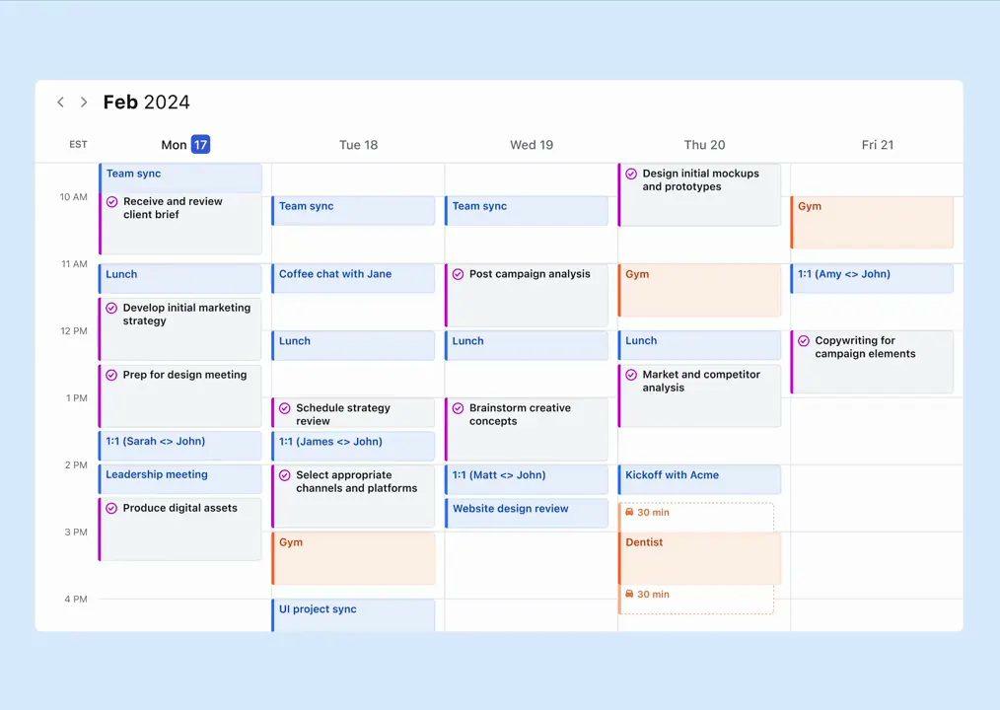

Motion Review: The Calendar That Rearranges Your Life, Politely
6.2 We Used It Score, out of 10
Ratings by business type
Best suited to: founders, consultants, agency teams and team leads whose real problem is too many deadlines competing for one calendar.
We Used It HQ: Streamlining business, whatever your size
The short answer
Motion is slick, clever and genuinely different: instead of showing you a plan, it schedules your tasks into your calendar and reshuffles them when life happens. For founders, consultants and small teams drowning in competing deadlines, that engine is the product. For structured project management, waterfall programmes, budgets, deep task hierarchies, it runs out of road. Our reviewer's frustration was unusual: he liked it and wanted more of the features his work needs, not fewer.
What it is
Motion is an AI scheduling layer over your tasks and meetings. You give it tasks with deadlines and durations; it places them into the gaps in your calendar, moves them when meetings land, and warns you early when a deadline cannot be met. Project features exist, but the calendar is the sun everything orbits.
Where it wins
- The auto scheduling engine, full stop. When a task's time moves, the calendar and the plan update themselves. Every review we checked names this as the reason to buy Motion, and it is the one capability in this series nobody else really has
- Polish. The desktop UX/UI is slick and quick, and the whole product feels considered
- The training. Motion's own onboarding material is good, which matters, because the product asks you to change how you think, not just where you click
- Deadline honesty. It flags work that will not fit before the deadline arrives, rather than letting you discover it on the day

Where it frustrates
- It was not built for structured programme work. Gantt charts, capacity planning and time tracking sit only on the Business AI tier, there is no budget or cost management to speak of, and the scheduling magic only works when every task and every teammate lives inside Motion
- The fit problem cuts both ways. Motion is aimed at deadline driven knowledge work: founders, team leads, agencies juggling client projects, consultants billing by the hour. Long, hierarchical, budget controlled programmes are simply not its home turf
- No free plan. A 7 day trial, card required, and purchases are non refundable, which is a brisk way to treat people who are still deciding
- Individuals pay more than teams. A solo user pays $29 a month billed annually on Pro AI, while a team seat costs $19. The lone worker subsidises the crowd, again
- The mobile app lags the desktop badly in reviewer scores, which stings for a product whose whole job is your day
The AI, and its price tag
Unusually for this series, the AI is the product rather than an add on: the scheduling engine is the AI. It is metered in credits, 7,500 per seat per month on Pro AI and 15,000 on Business AI, spent across the assistant and automation features. Our duplication warning mostly does not apply here, because Motion's AI does a job, scheduling, that a general AI subscription does not do for you. This is what buying AI inside a tool is supposed to look like.
Reporting and dashboards
Reporting is the thin end of Motion. You get calendar views, project progress and deadline risk signals, which serve the person doing the work. Client facing dashboards and executive roll ups are not its game. If showing progress to a board is a requirement, Motion will need a companion tool.
Pricing
Checked November 2026. Pro AI: $19 per seat per month for teams billed annually ($29 monthly); individuals $29 annually or $49 monthly. Business AI: $29 teams ($49 monthly); individuals $39 ($69 monthly). No free plan, 7 day trial.
Try it:
Visit MotionVerdict
A very good answer to a question our reviewer was not asking. If your chaos is calendar shaped, Motion is the most original tool in this series and the time saved score above is earned. If your chaos is a three year programme with a budget and a work breakdown structure, it will charm you and then let you down.
Try it: Visit Motion
Research note: Pricing, credits and plan features checked against vendor pages and published comparisons, November 2026. Usage history is the author's own.
Watch: the official video
“Motion Project & Task Auto-scheduling Tutorial”, from the official Motion YouTube channel.